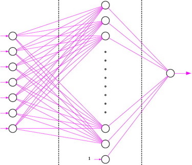
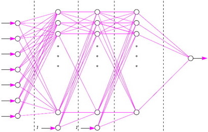
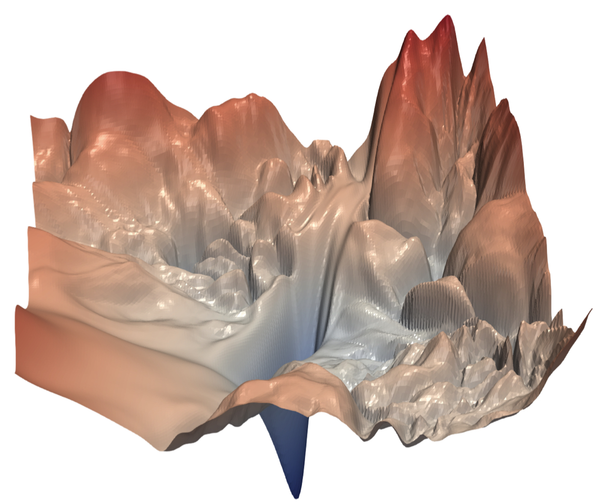
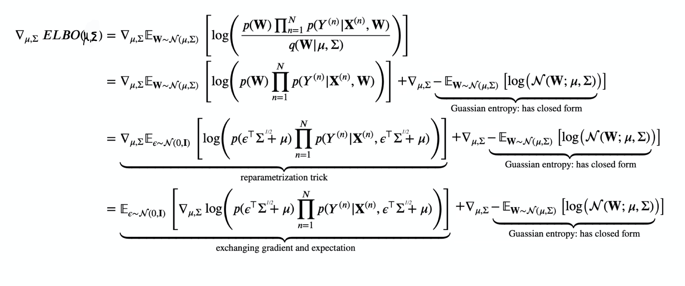
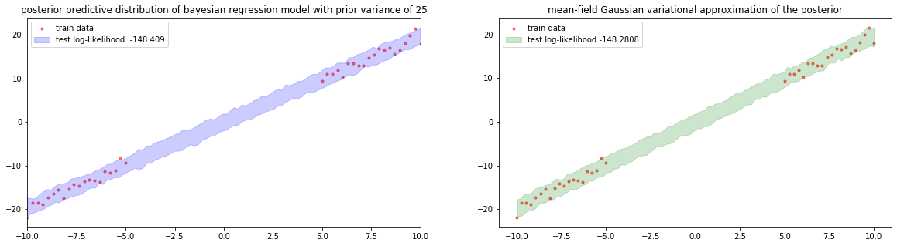
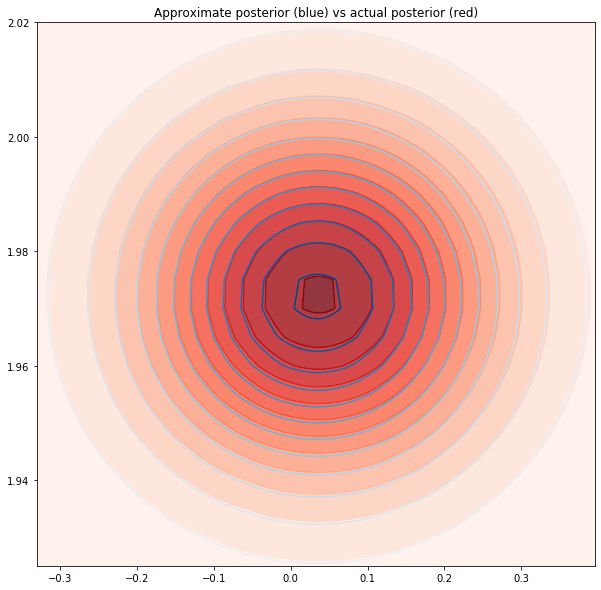
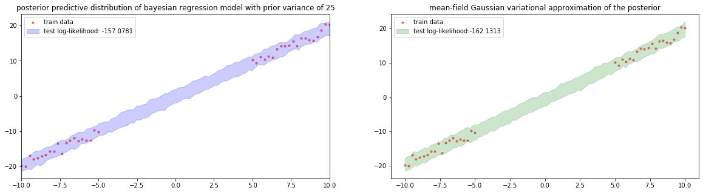
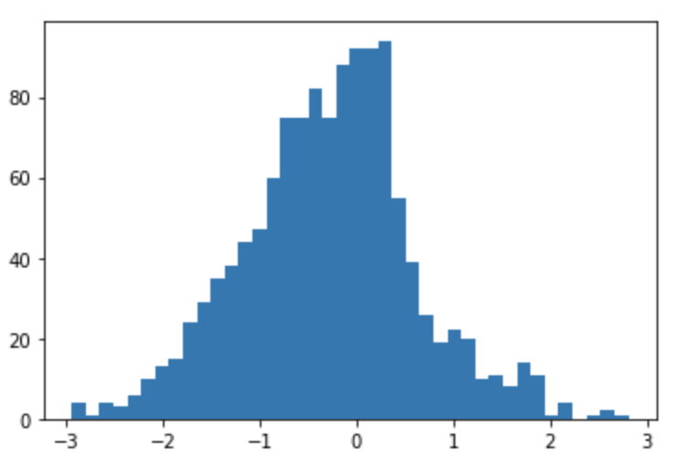

22. Black-box Variational Inference#
This chapter is adapted from AM207 (Harvard, Fall 2021). Watch the recorded lecture.
In this chapter
Review of Neural Network Models
Bayesian Neural Networks
Black-box Variational Inference
22.1. Review of Neural Network Models#
How Would You Parameterize a Non-linear Trend?#
In non-linear regression, we are interested in modeling observed outcome \(Y^{(n)}\) as a non-linear function of observed covariates \(\mathbf{X}^{(n)}\):

Representing Arbitrarily Complex Functions#
Motto: neural netoworks build up a complex function \(g\) by composing simple nonlinear functions. We represent neural networks as layered directed graphs where each node \(i\) in the \(l\)-th layer represents the function \(f\left(\sum_{j}w^{l-1}_{ji} h^{l-1}_j\right)\), \(h^{l-1}_j\) being the hidden nodes from the \(l-1\)-th layer.

This is a neural network. We denote the weights of the neural network collectively by \(\mathbf{W}\). The non-linear function \(f\) is called the activation function.
Design Choices: Depth or Width#
Ideally, we want our architecture to be able to express a number of very complex functions, since we don’t know what is appropriate for our data. So what architecture is more effective for expressing complex functions?
|
 |
 |
Neural Networks Regression#
Model for Regression: \(Y^{(n)}\sim \mathcal{N}(\mu, \sigma^2)\), \(\mu = g_\mathbf{W}(\mathbf{X}^{(n)})\), where \(g_\mathbf{W}\) is a neural network with parameters \(\mathbf{W}\).
Training Objective: find \(\mathbf{W}\) to maximize the likelihood of our data. This is equivalent to minimizing the Mean Square Error,
Optimizing the Training Objective: The main challenge of optimizing the objective is computing the gradient of a neural network. Luckily, the gradient can be computed in an algorithmic way using the chain rule, working from the output node backwards towards the input. For example, the derivative with respect to the hidden node \(h^l_i\) is:
The Maximum Likelihood Objective is Non-Convex for Neural Networks#
Unfortunately, the likelihood and MSE functions for neural network regression models are not convex! This means that just because your gradient is zero, it doens’t mean you’ve optimized anything.


Neural Network Regression vs Linear Regression#
Linear models are easy to interpret. Once we’ve found the MLE of the model parameters, we can formulate scientific hypotheses about the relationship between the outcome \(Y\) and the covariates \(\mathbf{X}\):
What do the weights of a neural network tell you about the relationship between the covariates and the outcome?
Generalization Error and Bias/Variance#
Complex models have low bias – they can model a wide range of functions, given enough samples.
But complex models like neural networks can use their ‘extra’ capacity to explain non-meaningful features of the training data that are unlikely to appear in the test data (i.e. noise). These models have high variance – they are very sensitive to small changes in the data distribution, leading to drastic performance decrease from train to test settings.

|

|
22.2. Bayesian Neural Networks#
Bayesian Polynomial Regression is Bayesian Linear Regression#
A Bayesian polynomial regression model uses a polynomial of degree \(D\) to capture the relationship between \(X\in \mathbb{R}\) and \(Y\):
Rather than considering the polynomial as a non-linear function of \(X\), we can see it as a linear function of the vector \(\mathbf{X} = [1, X, X^2, \ldots, X^D] \in \mathbb{R}^{D+1}\):
This means that for a Bayesian polynomial regression model, the posterior \(p(\mathbf{X} | \text{Data})\) is a multivariate Gaussian (just as in the case of Bayesian linear regression, see the Chapter 1 problem set).
Bayesian Neural Networks#
A Bayesian neural network (BNN) is a Bayesian model for regression that uses a neural network to capture the relationship between \(\mathbf{X}\) and \(Y\):
Unfortunately, the posterior of a neural network is multimodal and very complex, posing a challenge for samplers. Furthermore, training data for BNNs are typically large, this makes gradient-based samplers like HMC extremely inefficient – in every leap-frog iteration of HMC, the gradient \(\frac{\partial U(q)}{\partial q}\) requires an evaluation over the entire training data set.
See course project papers:
NeuTra-lizing Bad Geometry in Hamiltonian Monte Carlo Using Neural Transport
Stochastic Gradient Hamiltonian Monte Carlo
22.3. Black-box Variational Inference#
Review of Variational Inference#
Goal: given a target posterior distribution \(p(\psi | Y_1, \ldots, Y_N)\), \(\psi \in \mathbb{R}^I\) we want to find a distribution \(q(\psi |\lambda^*)\) in a family of distributions \(Q = \{q(\psi |\lambda) | \lambda \in \Lambda \}\) such that \(q(\psi |\lambda^*)\) best approximates \(p\).
Design Choices: we need to choose:
A. (Variational family) a family \(Q\) of candidate distributions for approximating \(p\). The members of \(Q\) are called the variational distributions.
Our Choice: we assume that the joint \(q(\psi)\) factorizes completely over each dimension of \(\psi\), i.e. \(q(\psi)= \prod_{i=1}^I q(\psi_i | \lambda_i)\). This is called the mean field assumption. What can go wrong with this design choice?
B. (Divergence measure) a divergence measure to quantify the difference between \(p\) and \(q\).
Our Choice:
Variational Inference as Optimization#
Let’s formalize variational inference for a target distribution \(p(\psi)\): find a \(q(\psi|\lambda^*)\) such that
Recall that for EM, we had proved that minimizing the KL is equivalent to maximizing the ELBO (for which it is easier to compute the gradient). We will do the same here:
Thus, the variational objective can be rephrased as maximizing the \(ELBO\).
Variational Inference for Bayesian Neural Networks#
Consider a Bayesian neural network:
The ELBO is:
To find the optimal variational parameters such that \(\mu^*, \Sigma^* = \mathrm{argmax}\, ELBO(\mu, \Sigma)\), we need to compute the gradient of the ELBO:
Going deeper: Rewriting the Gradient of the ELBO
To find the optimal variational parameters such that \(\mu^*, \Sigma^* = \mathrm{argmax}\, ELBO(\mu, \Sigma)\), we need to compute the gradient of the ELBO:
The main problem in computing this gradient is that we can’t take the gradient of a complex integral in closed form, and we can’t push the gradient inside the expectation to make the gradient computation easier (since the expectation is over a distribution that involves \(\mu, \Sigma\)). Recall that in Coordinate Ascent Variational Inference (CAVI), we avoided computing this gradient all together, but this required extensive model-specific derivations. Today, instead, we will adopt the approach of performing gradient descent taking MC estimates of expectations in the gradient.
But before we estimate the expectation with a sum, we need to push the gradient inside the expectation! To do so, we rewrite the expectation as an integral:
Now, in general, integration and differentiation do not commute meaning \(\nabla \int \neq \int \nabla\). However, in this case, we leverage the properties of the functions inside the integrand to prove that:
Using the product rule, we can differentiate the integrand:
Now, we can do a bit of algebra to break up the integral into pieces and evaluate some easy pieces:
Note that
since \(\nabla_{\mu, \Sigma}\, \log p(\mathbf{W}, \text{Data}) =\mathbf{0}\) because \(p(\mathbf{W}, \text{Data})\) depends neither on \(\mu\) nor \(\Sigma\).
Similarly, we can prove that
The proof is not difficult, it only requires you to write out the gradient for \(\nabla_{\mu, \Sigma}\,\log q(\mathbf{W} | \mu, \Sigma)\),
and then evaluate the expectation as an integral.
Finally, this mean that we are left with:
But the problem is that this doesn’t look like an expectation! So we can’t use MC estimatation to approximate this integral! Luckily, we observe the following algebra fact: since we know that \( \nabla_{\mu, \Sigma}\,\log q(\mathbf{W} | \mu, \Sigma) = \frac{\nabla_{\mu, \Sigma}\,q(\mathbf{W} | \mu, \Sigma)}{q(\mathbf{W} | \mu, \Sigma)} \), this gives us
That is, knowing the derivative of the log of a function allows us to compute the gradient of that function! This trick is called the log-derivative trick.
Now, if we replace the gradient of \(q\) in our integral with the gradient of log of \(q\), we get
and this integral can be written as an expectation:
Recombining the two log terms, we get:
That is, we have successfully rewritten the gradient of the ELBO as an expectation of a gradient! The resulting expectation of a gradient is called the score function gradient of the ELBO. Finally, to approximate the gradient, we can perform MC estimation to estmiate the expectation and use autograd to compute \( \nabla_{\mu, \Sigma}\, q(\mathbf{W} | \mu, \Sigma)\); and since the gradient is now easily approximated we can maximize the ELBO (minimize the negative ELBO) using gradient descent.
Black-Box Variational Inference#
The Black-box Variational Inference (BBVI) algorithm for BNN’s: 0. Initialization: pick an intial value \(\mu^{(0)}, \Sigma^{(0)}\)
Gradient Ascent: repeat:
Approximate the gradient
\[\begin{split}\begin{aligned} \nabla_{\mu, \Sigma} \, ELBO(\mu, \Sigma) &= \mathbb{E}_{\mathbf{W} \sim q(\mathbf{W} | \mu, \Sigma)}\left[ \nabla_{\mu, \Sigma}\, q(\mathbf{W} | \mu, \Sigma) * \log \left( \frac{p(\mathbf{W}) \prod_{n=1}^N p(Y^{(n)} | \mathbf{X}^{(n)}, \mathbf{W})}{q(\mathbf{W} | \mu, \Sigma)} \right) \right]\\ &\approx\underbrace{\frac{1}{S}\sum_{s=1}^S \nabla_{\mu, \Sigma}\, \log q(\mathbf{W}^s | \mu, \Sigma) * \log \left( \frac{p(\mathbf{W}^s) \prod_{n=1}^N p(Y^{(n)} | \mathbf{X}^{(n)}, \mathbf{W}^s)}{q(\mathbf{W}^s | \mu, \Sigma)} \right)}_{{\text{score function gradient}}}, \end{aligned}\end{split}\]where \(\mathbf{W}^s\sim q(\mathbf{W} | \mu^{\text{current}}, \Sigma^{\text{current}})\).Update parameters \((\mu^{\text{current}}, \Sigma^{\text{current}}) \leftarrow (\mu^{\text{current}}, \Sigma^{\text{current}}) + \eta * {\text{score function gradient}}\)
Variance of the Gradient Estimate#
In Black-Box Variational Inference, we estimate the gradient using Monte Carlo estimation (i.e. the score function gradient approximation):
where \(\mathbf{W}^s\sim q(\mathbf{W} | \mu^{\text{current}}, \Sigma^{\text{current}})\).
As in the case with every MC estimate, we worry about variance. As it turns out, the score function gradient approximation has very high variance. This leads to slow convergence for gradient descent. To mitigate this, we need to employ a number of variance reduction methods.
In the original paper “Black-Box Variational Inference”, the authors implement control variates and Rao-Blackwellization.
Gradient of the ELBO with the Reparametrization Trick#
An alternative to using the log-derivative trick to computing the gradient of the ELBO is to use the reparametrization trick.
We note that since \(q(\mathbf{W} | \mu, \Sigma) = \mathcal{N}(\mathbf{W};\mu, \Sigma )\), sampling \(W\sim q(\mathbf{W} | \mu, \Sigma)\) is equivalent to sampling \(\epsilon \sim \mathcal{N}(0, \mathbf{I})\) and then transforming the sample \(\mathbf{W} = \epsilon^\top \Sigma^{1/2} + \mu\), where \(\mathbf{I}\) and \(\Sigma\) have the same dimensions.
Thus, we can rewrite the ELBO:


Black-Box Variational Inference with the Reparametrization Trick#
The Black-box Variational Inference (BBVI) with the reparametrization trick or Bayes By Backprop algorithm for BNN’s: 0. Initialization: pick an intial value \(\mu^{(0)}, \Sigma^{(0)}\)
Gradient Ascent: repeat:
Approximate the gradient
\[\begin{split}\begin{aligned} \nabla_{\mu, \Sigma} \, ELBO(\mu, \Sigma) \approx& \small\frac{1}{S} \sum_{s=1}^S \nabla_{\mu, \Sigma} \log \left[p(\epsilon_s^\top \Sigma^{1/2} + \mu) \prod_{n=1}^N p(Y^{(n)} | \mathbf{X}^{(n)}, \epsilon_s^\top \Sigma^{1/2} + \mu)\right] \\ &+ \nabla_{\mu, \Sigma}\underbrace{-\mathbb{E}_{\mathbf{W} \sim \mathcal{N}(\mu, \Sigma )}\left[\log \mathcal{N}(\mathbf{W};\mu, \Sigma ) \right]}_{\text{Guassian entropy: has closed form}}, \end{aligned}\end{split}\]where \(\epsilon_s \sim \mathcal{N}(0, \mathbf{I})\).Update parameters \((\mu^{\text{current}}, \Sigma^{\text{current}}) \leftarrow (\mu^{\text{current}}, \Sigma^{\text{current}}) + \eta * {\text{reparametrization gradient}}\)
BBVI for Bayesian Linear Regression (Posterior Predictives)#
posterior_sample_size = 100
##visualize the posterior predictive of a bayesian polynomial regression model
#prior variance
prior_var = 5**2
fig, ax = plt.subplots(1, 2, figsize=(20, 5))
ax[0], joint_variance, joint_mean = bayesian_polynomial_regression(x_train, y_train, x_test, y_test, prior_var, y_var, ax[0], S=posterior_sample_size, poly_degree=1)
ax[1], var_variance, var_mean = variational_polynomial_regression(Sigma_W, sigma_y, x_test, y_test, x_train, y_train, forward, ax[1], posterior_sample_size=posterior_sample_size, S=4000, max_iteration=2000, step_size=1e-1, verbose=False)
plt.show()
Optimizing variational parameters...

BBVI for Bayesian Linear Regression (Posteriors)#
#plot the target density against variational densities
fig, ax = plt.subplots(1, 1, figsize=(10, 10))
ax.contourf(x, y, z_p, levels=14, cmap='Reds', alpha=0.8)
ax.contour(x, y, z_p, levels=14, cmap='Reds', alpha=0.8)
ax.contour(x, y, z_q, levels=14, cmap='Blues', alpha=1.)
ax.set_title('Approximate posterior (blue) vs actual posterior (red)')
plt.show()

Optimizing variational parameters...

22.4. Summary#
(Width vs Depth) In a NN architecture, we control the width and the depth of the network. What is the effect of increasing each (independently) on the function that we learn?
Extremely wide NNs have fundamentally different behaviors than wide NNs
Reconciling modern machine learning practice and the bias-variance trade-off
Deep networks behave fundamentally differently than shallow but wide NNs
Exponential expressivity in deep neural networks through transient chaos
Deep networks can have unexpected pathologies
(Linear vs Neural Network Models) While both simple and complex models can be interpreted and successfully trained, there are trade-offs between using a complex vs a simple model!
Easily interpreted vs interpretations are harder to come by
Interpretations are more faithful vs interpretations can be more misleading
Training is easier (because objective function is convex) vs training is much harder (because objective function is extremely non-convex)
(Bayesian Neural Networks) Deep Bayes refers to the subfield of ML wherein we try to combine deep learning with Bayesian learning. A Bayesian Neural Network is one example of a deep Bayesian model.
Why do we want to make our NNs Bayesian?
How do we make NNs Bayesian?
How do we sample from the posterior?
Will sampling from the posterior using HMC going to work?
Can we do variational inference? Now we can - with 4 pieces of technology:
algebra tricks to get the gradient past the expectation in the ELBO
Monte Carlo estimate of the expectation in the ELBO
automatic differentiation
gradient descent
\[\begin{aligned} \nabla_{\mu, \Sigma}\,\underbrace{\mathbb{E}_{\mathbf{W} \sim q(\mathbf{W} | \mu, \Sigma)} \left[ \log \left( \frac{p(\mathbf{W}) \prod_{n=1}^N p(Y^{(n)} | \mathbf{X}^{(n)}, \mathbf{W})}{q(\mathbf{W} | \mu, \Sigma)} \right) \right]}_{ELBO(\mu, \Sigma)}. \end{aligned}\]
Variational Inference for BNNs#
The Black-box Variational Inference (BBVI) algorithm for BNN’s: 0. Initialization: pick an intial value \(\mu^{(0)}, \Sigma^{(0)}\)
Gradient Ascent: repeat:
Approximate the gradient
\[\begin{split}\begin{aligned} \nabla_{\mu, \Sigma} \, ELBO(\mu, \Sigma) &= \nabla_{\mu, \Sigma}\,\underbrace{\mathbb{E}_{\mathbf{W} \sim q(\mathbf{W} | \mu, \Sigma)} \left[ \log \left( \frac{p(\mathbf{W}) \prod_{n=1}^N p(Y^{(n)} | \mathbf{X}^{(n)}, \mathbf{W})}{q(\mathbf{W} | \mu, \Sigma)} \right) \right]}_{ELBO(\mu, \Sigma)}\\ &= \underbrace{\mathbb{E}_{\mathbf{W} \sim q(\mathbf{W} | \mu, \Sigma)}\left[ \nabla_{\mu, \Sigma}\, q(\mathbf{W} | \mu, \Sigma) * \log \left( \frac{p(\mathbf{W}) \prod_{n=1}^N p(Y^{(n)} | \mathbf{X}^{(n)}, \mathbf{W})}{q(\mathbf{W} | \mu, \Sigma)} \right) \right]}_{\text{score function gradient}}\\ &\approx\underbrace{\frac{1}{S}\sum_{s=1}^S \nabla_{\mu, \Sigma}\, \log q(\mathbf{W}^s | \mu, \Sigma) * \log \left( \frac{p(\mathbf{W}^s) \prod_{n=1}^N p(Y^{(n)} | \mathbf{X}^{(n)}, \mathbf{W}^s)}{q(\mathbf{W}^s | \mu, \Sigma)} \right)}_{{\text{MC approx. of score function gradient}}}, \end{aligned}\end{split}\]where \(\mathbf{W}^s\sim q(\mathbf{W} | \mu^{\text{current}}, \Sigma^{\text{current}})\).Update parameters \((\mu^{\text{current}}, \Sigma^{\text{current}}) \leftarrow (\mu^{\text{current}}, \Sigma^{\text{current}}) + \eta * {\text{(MC approx. of score function gradient)}}\)
The reparametrization gradient is another way to push the gradient past the expectation in the gradient of the ELBO.
We note that since \(q(\mathbf{W} | \mu, \Sigma) = \mathcal{N}(\mathbf{W};\mu, \Sigma )\), sampling \(W\sim q(\mathbf{W} | \mu, \Sigma)\) is equivalent to sampling \(\epsilon \sim \mathcal{N}(0, \mathbf{I})\) and then transforming the sample \(\mathbf{W} = \epsilon^\top \Sigma^{1/2} + \mu\), where \(\mathbf{I}\) and \(\Sigma\) have the same dimensions.
Thus, we can rewrite the ELBO:
The Black-box Variational Inference (BBVI) with the reparametrization trick algorithm for BNN’s: 0. Initialization: pick an intial value \(\mu^{(0)}, \Sigma^{(0)}\)
Gradient Ascent: repeat:
Approximate the gradient
\[\begin{split}\begin{aligned} \nabla_{\mu, \Sigma} \, ELBO(\mu, \Sigma) \approx& \small\frac{1}{S} \sum_{s=1}^S \nabla_{\mu, \Sigma} \log \left[p(\epsilon_s^\top \Sigma^{1/2} + \mu) \prod_{n=1}^N p(Y^{(n)} | \mathbf{X}^{(n)}, \epsilon_s^\top \Sigma^{1/2} + \mu)\right] \\ &+ \nabla_{\mu, \Sigma}\underbrace{-\mathbb{E}_{\mathbf{W} \sim \mathcal{N}(\mu, \Sigma )}\left[\log \mathcal{N}(\mathbf{W};\mu, \Sigma ) \right]}_{\text{Guassian entropy: has closed form}}, \end{aligned}\end{split}\]where \(\epsilon_s \sim \mathcal{N}(0, \mathbf{I})\).Update parameters \((\mu^{\text{current}}, \Sigma^{\text{current}}) \leftarrow (\mu^{\text{current}}, \Sigma^{\text{current}}) + \eta * {\text{reparametrization gradient}}\)
22.5. Exercises#
These problems were originally assigned as homework. Data files are in the book’s data/ folder.
Problem Set: Bayesian Neural Networks#
Bayesian Neural Network Regression#
In this problem set you will explore Bayeisan models for regression with neural networks – essentially, you will place priors on the network parameters \(\mathbf{W}\) and infer the posterior \(p(\mathbf{W}|\text{Data})\). These Bayesian models are called Bayesian neural networks. The data for this regression problem is in HW8_data.csv. You are provided an implementation of a neural network as well as an example of how to use it – but feel free to implement your own version!
Let’s instantiate a neural network with 1-hidden layer, 5-hidden nodes and relu activation:
Fit the neural network to the data and visualize the fit.
Exercise: Part I: Inference for Bayesian Neural Networks Using HMC
(The Bayesian Neural Network Model) We will implement the following Bayesian model for the data:
\[\begin{split}\begin{aligned} \mathbf{W} &\sim \mathcal{N}(0, 5^2 \mathbf{I}_{D\times D})\\ \mu^{(n)} &= g_{\mathbf{W}}(\mathbf{X}^{(n)})\\ Y^{(n)} &\sim \mathcal{N}(\mu^{(n)}, 0.5^2)\\ \end{aligned}\end{split}\]where \(g_{\mathbf{W}}\) is a neural network with parameters \(\mathbf{W}\) represented as a vector in \(\mathbb{R}^{D}\) with \(D\) being the total number of parameters (including biases).
Implement the log of the joint distribution inautograd’s version ofnumpy, i.e. implement \(\log \left[p(\mathbf{W})\prod_{n=1}^N p(Y^{(n)} |\mathbf{X}^{(n)} , \mathbf{W}) \right]\). Hint: you’ll need to write out the log of the various Gaussian pdf’s and implement their formulae usingautograd’s numpy functions.
(Sample from the Posterior) Use HMC to sample from the posterior of the Bayesian neural network in Exercise 1 with 1 hidden layer and 5 hidden nodes. Start with the following settings for your sampler:
params = {'step_size':1e-3,
'leapfrog_steps':50,
'total_samples':10000,
'burn_in':.1,
'thinning_factor':2,
'position_init': nn.weights}
Note that you should initialize with the MLE model, otherwise convergence may be slow. Please feel free to tweak these design choices as you see fit!
(Visualize the Posterior Predictive) Visualize 100 samples, randomly selected, from your posterior samples of \(\mathbf{W}\), by ploting their predicted values plus a random noise \(\epsilon \sim \mathcal{N}(0, 0.5^2)\) at 100 equally spaced x-values between -8 and 8:
x_test = np.linspace(-8, 8, 100)
y_test = nn.forward(sample, x_test.reshape((1, -1)))
y_test += np.random.normal(0, 0.5, size=y_test.shape)
where sample is a posterior sample of \(\mathbf{W}\).
(Model Evaluation) Discuss the fit of your model to the data. Discuss also what the posterior predictive tell you about the aleatoric and epistemic uncertainty of the model. Are these uncertainties what you’d want (think about want kind of uncertainties you want and where)?
Exercise: Part II: Inference for BNNs Using Black-Box Variational Inference with the Reparametrization Trick
(BBVI with the Reparametrization Trick) Implement BBVI with the reparametrization trick for approximating an arbitrary posterior \(p(w| \text{Data})\) by an isotropic Gaussian \(\mathcal{N}(\mu, \Sigma)\), where \(\Sigma\) is a diagonal matrix. See Lecture #17 or the example code from autograd’s github repo.
Unit Test: You shoud check that your implementation is correct by approximating the posterior of the following Bayesian logistic regression model:
\[\begin{split}\begin{aligned} w &\sim \mathcal{N}(0, 1)\\ Y^{(n)} &\sim Ber(\text{sigm}(wX^{(n)} + 10)) \end{aligned}\end{split}\]where \(w\), \(Y^{(n)}\), \(X^{(n)}\) are a real scalar valued random variables, and where the data consists of a single observation \((Y=1, X=-20)\).
The true posterior \(p(w | Y=1, X=-20)\) should look like the following (i.e. the true posterior is left-skewed):


Your mean-field variational approximation should be a Gaussian with mean around -0.321 and standard deviation around 0.876.
(Variational Inference for BNNs) For the Bayesian model you implemented in Exercise 1 and 2, use BBVI with the reparametrization trick to approximate the posterior of the Bayesian neural network with a mean-field Gaussian variational family (i.e. an isotropic Gaussian). Please set learning rate and maximum iteration choices as you see fit!
(Visualize the Posterior Predictive) Visualize 100 samples \(\mathbf{W}^s\) from your approximate posterior of \(\mathbf{W}\) by ploting the neural network outputs with weight \(\mathbf{W}^s\) plus a random noise \(\epsilon \sim \mathcal{N}(0, 0.5^2)\) at 100 equally spaced x-values between -8 and 8:
x_test = np.linspace(-8, 8, 100)
y_test = nn.forward(sample, x_test.reshape((1, -1)))
y_test += np.random.normal(0, 0.5, size=y_test.shape)
where sample is a sample from the approximate posterior of \(\mathbf{W}\).
(Model Evaluation) Discuss the fit of your model to the data. Discuss also what the posterior predictive tell you about the aleatoric and epistemic uncertainty of the model. Are these uncertainties what you’d want (think about want kind of uncertainties you want and where)?
Exercise: Part III: Comparison
(Model Evaluation) Compare the posterior predictive visualization from BBVI with the reparametrization trick to the one you obtained using HMC. Can you say whether or not your posterior approximation is good? How does approximating the posterior effect our estimation of epistemic and aleatoric uncertainty?
(Quality of Posterior Vs Quality of Posterior Predictive) Based on your convergence diagnostics of your HMC sampler, do you believe that you’ve obtained a set of representative samples from the BNN posterior? Why or why not?
Based on your understanding of BNN posteriors, do you believe that a mean-field Gaussian is a good approximation of the BNN posterior? Why or why not?
Which set of samples, HMC or VI, do you believe better captures the BNN posterior?
Based on the empirical results from above, do you believe there is a clear positive relationship between posterior approximation and quality of posterior predictive uncertainties - i.e. is it true that the more I capture of the BNN posterior the beter the quality of my posterior predictive uncertainties?
(Speed and Scalability) Compare the two inference methods, HMC and BBVI, and discuss the scalability of each with respect to the number of model parameters and number of data points (how does increasing the number of model parameters or the number of data points affect each inference method?).
22.6. Further Reading#
Variational Inference for Bayesian Neural Networks